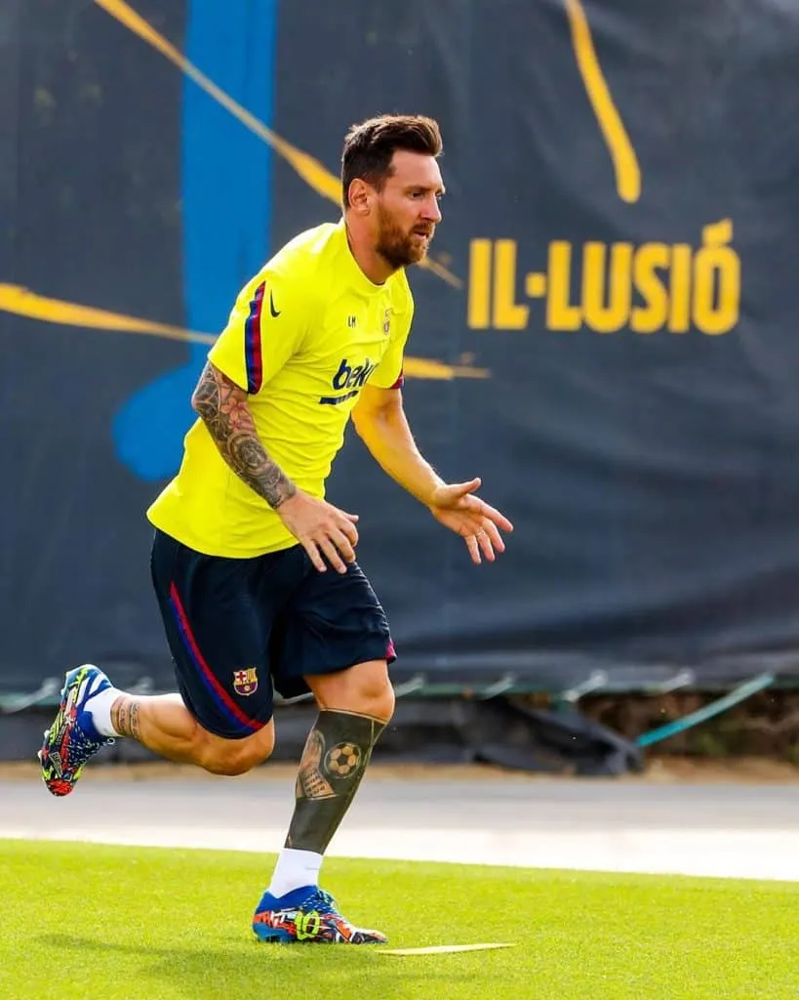

Antoine ROHO

Lionel Messi est considéré comme l’un des plus grands joueurs de football de tous les temps. Grâce à sa technique exceptionnelle, sa vision du jeu et sa capacité à marquer, il a remporté de nombreux Ballons d'Or. Champion du monde avec l’Argentine en 2022, il a marqué l’histoire du FC Barcelone avant de poursuivre sa carrière à l’international. Son style de jeu unique fait de lui une véritable légende vivante du football.
Visitez le site Wikipédia